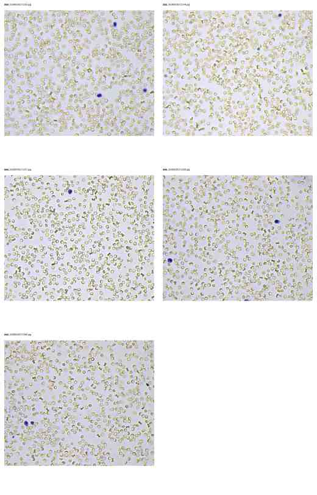
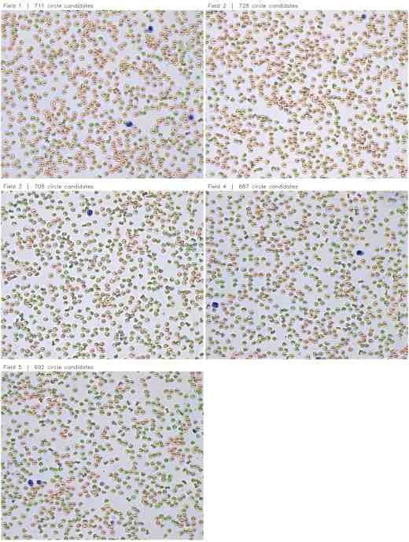
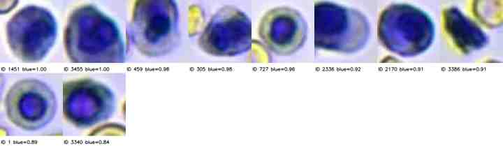
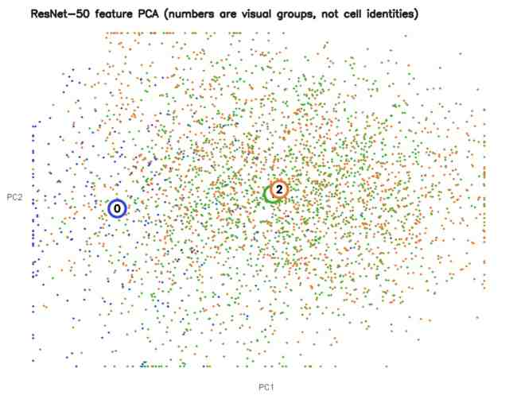
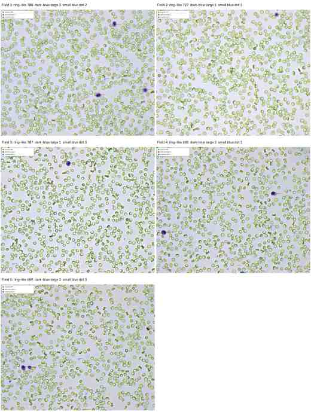
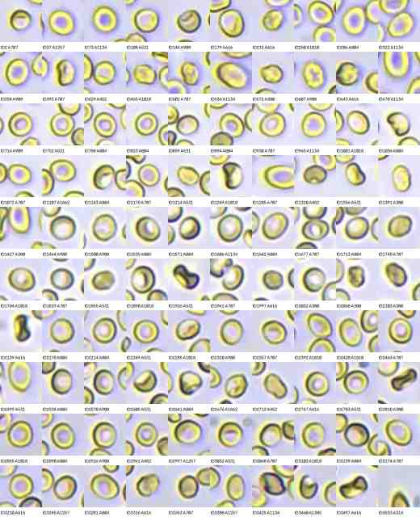
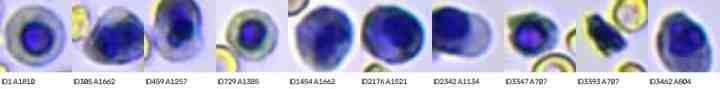
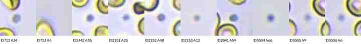

定位与手工特征
能否找到规则圆形目标？基础颜色和形态能否形成稳定分组？
UNLABELED BRIGHT-FIELD SMEAR · PILOT
从传统形态特征、预训练深度特征到可解释外观规则，逐步检验无标注血涂片图像能够支持的分析边界。

RESEARCH FRAME
一行记录代表一个算法候选，而非经专家确认的细胞。没有标注、临床计数、尺度信息和独立测试集，因此不计算准确率、F1或mAP，也不声称模型具有泛化能力。
能否找到规则圆形目标？基础颜色和形态能否形成稳定分组？
更复杂的深度特征是否形成清晰、可重复的自然分组？
将候选组织为可审阅外观组，不赋予生物学身份。
EXPERIMENT 01 · COMPLETED
Hough圆定位 · 手工颜色/形态特征 · K-means
灰度化和中值滤波后进行Hough圆检测；半径10–25 px。
半径、中心蓝色比例、暗色比例、外环黄色比例与BGR均值。
k=3 是预设参数，不代表发现了3种细胞。


EXPERIMENT 02 · PRELIMINARY
ResNet-50特征 · PCA · 聚类稳定性检验

EXPERIMENT 03 · QUALITATIVE
固定规则 · 全图叠加 · 不赋予生物学身份
没有细胞学真值，外观相似不能证明生物学身份。因此这里只报告环状大目标、深蓝大目标和小蓝点。

| 视野 | 环状大目标 | 深蓝大目标 | 小蓝点 | 合计 |
|---|---|---|---|---|
| Field 1 | 708 | 3 | 2 | 713 |
| Field 2 | 727 | 1 | 1 | 729 |
| Field 3 | 707 | 1 | 3 | 711 |
| Field 4 | 685 | 2 | 1 | 689 |
| Field 5 | 689 | 3 | 3 | 695 |
| 总计 | 3,516 | 10 | 10 | 3,536 |



小蓝点是最不确定的一组。初始规则得到117个候选，其中许多是环状结构边缘碎片；加强过滤后仅保留10个，但仍可能是染色沉淀、碎屑或成像伪影。
CONCLUSION
只有拥有对象级标签和独立视野后，才适合训练并评估正式分类器。